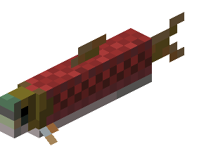

🐱 Mood Meter
Hercegnő, tudom milyen nehéz napokon mész keresztül, és hogy mennyire szeretnél egy cicát
És mivel a saját lakásodban nem lehet cica, miért ne lehetne addig egy itt? a saját oldaladon? 🤩
Ráadásul így már nem leszel magányos, még ha nem is beszélünk 😁
A cica neve Pörkölt. Pörkölt szomorú ha te is az vagy, és fel kell vidítanod, hogy boldog legyen
Pörköltnek szüksége van erre a csúszkára, hogy eldöntse milyen hangulatban vagy!
